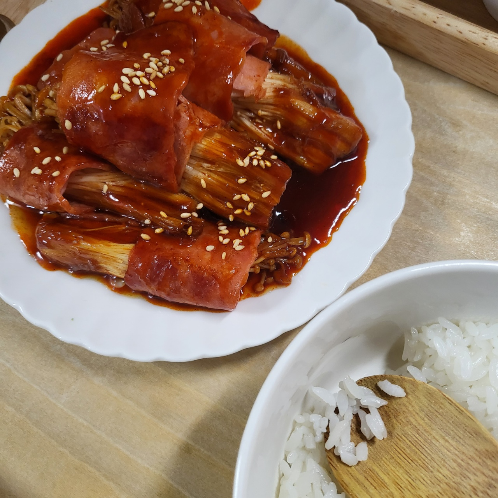
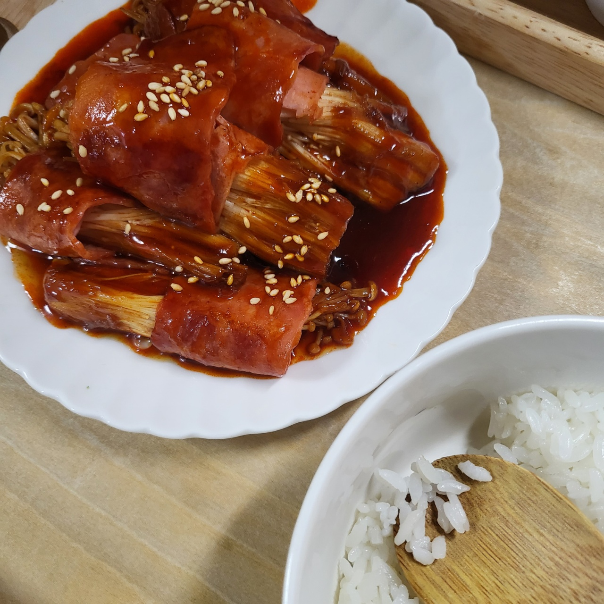

요리 :
자취를 시작하면서 배달음식, 외식비가 너무 많이 들어서 어쩔 수 없이 시작하게
되었지만 하다보니 재밌어서 취미가 되었다.
비주얼은 별로지만 나름 맛나는 음식을 만들 수 있다.
 


브이로그 편집 :
요즘 자취하면서 유튜브를 정말 자주 보게 되었는데 특히나 브이로그를 보면서 나도 내 일상생활을 영상으로 저장해보고 싶었다.
그래서 자주는 아니지만 가끔 시간 날 때마다 찍었던 브이로그 영상을 편집하고 있다.
아래 영상은 처음으로 만든 브이로그 영상이다.
디지털인문예술입문
20201213 박시영